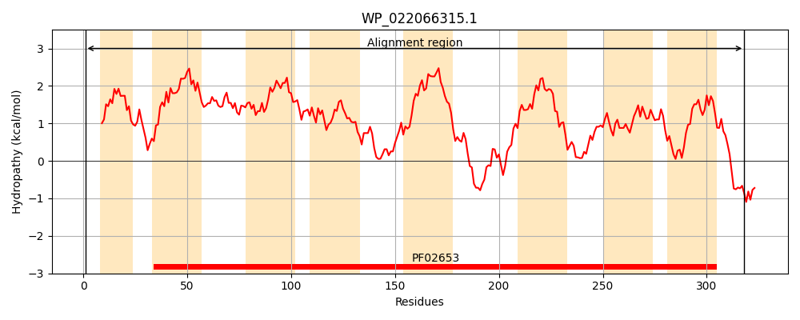
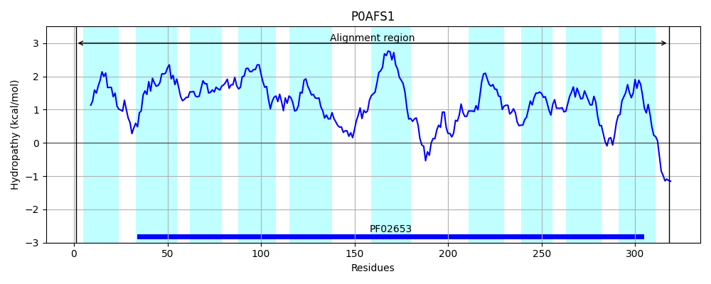
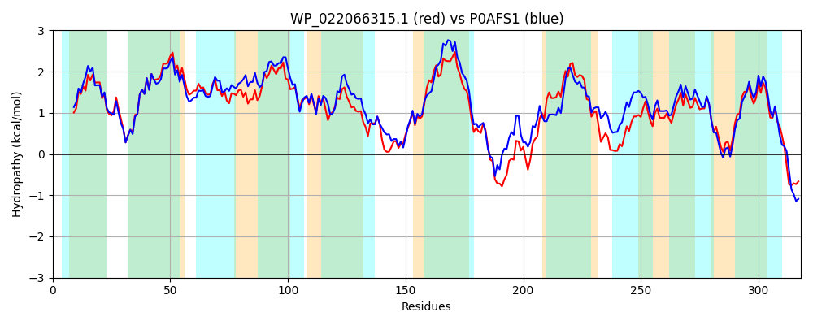

Hit Accession: P0AFS1
Hit TCID: 3.A.1.2.8
Hit Description: gnl|BL_ORD_ID|8838 gnl|TC-DB|P0AFS1|3.A.1.2.8 Inner membrane ABC transporter permease protein ydeZ - Escherichia coli.
Mach Len: 318
e:0.000000
Query TMS Count : 8
Hit TMS Count: 10
TMS-Overlap Score: 7.600000
Predicted Substrates:CHEBI:40646;autoinducer-2
BLAST Alignment:
Score: 1148 , Bit scores: 446 bits, E-value: 9.4e-159, Alignment length: 318, Percentage identity: 70
Query: 1 MKLKLNWESALLALLIAEILLFGALNSRMLDLNMLLFSTSDFICIGIVALPLTLVIISGGIDISLGSTIGLCAIALGVMTQAAWPLWLAVSLTLLLGLLCGLFNAALIHYTGISPLVITLGTLYLYGGGALLLSGMAGATGYEGIGGFPDSFTAIANLTLAGLPLPLVLFAIITFLFWLLAHRGRFGRHLFLLGQNPRAARYAALSVNGIPYVLYGLVGVASAVAALVMVSYFGSARSDLGRDLLMPALTAAVLGGANIYGGSGSILGTALAALLVGYLQQGLQMVGIPNQVSSALSGALLVVVVMGRSLSLHREWVR 318
M+++ WE AL ALL+ EI+ FGA+N RMLDLNMLLFSTSDFICIGIVALPLT+VI+SGGIDIS GSTIGLCAIALGV+ Q+ P+ LA+ LTLLLG LCGL NA LI YT ++PLVITLGTLYL+ G ALLLSGMAGATGYEGIGGFP +FT ANL + GLP+PL++F I +FWL H+ GR++FL+GQ+PR A Y+A+ VN LY + G+ASAVAA+++VSYFGSARSDLG LMPA+TA VLGGANIYGGSGSI+GTA+A LLVGYLQQGLQM G+PNQVSSALSGALL+VVV+GRS+SLHR+ ++
Sbjct: 1 MRIRYGWELALAALLVIEIVAFGAINPRMLDLNMLLFSTSDFICIGIVALPLTMVIVSGGIDISFGSTIGLCAIALGVLFQSGVPMPLAILLTLLLGALCGLINAGLIIYTKVNPLVITLGTLYLFAGSALLLSGMAGATGYEGIGGFPMAFTDFANLDVLGLPVPLIIFLICLLVFWLWLHKTHAGRNVFLIGQSPRVALYSAIPVNRTLCALYAMTGLASAVAAVLLVSYFGSARSDLGASFLMPAITAVVLGGANIYGGSGSIIGTAIAVLLVGYLQQGLQMAGVPNQVSSALSGALLIVVVVGRSVSLHRQQIK 318 | Protein Hydropathy Plots: |
|---|
|  |  |
Pairwise Alignment-Hydropathy Plot:
|
|---|
|  |